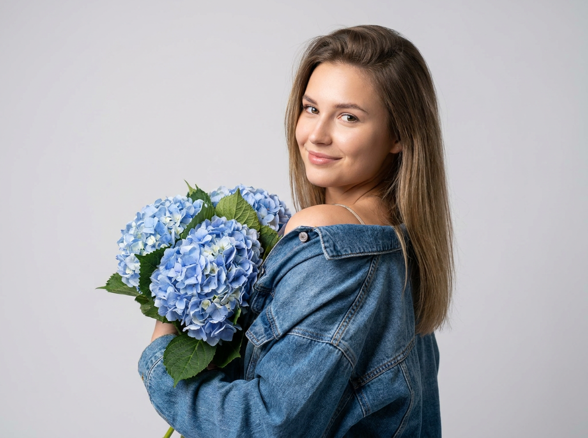
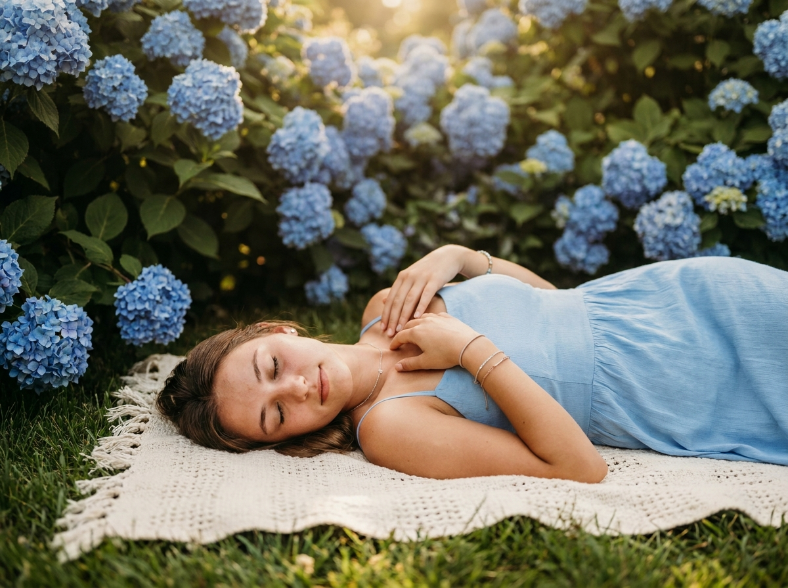
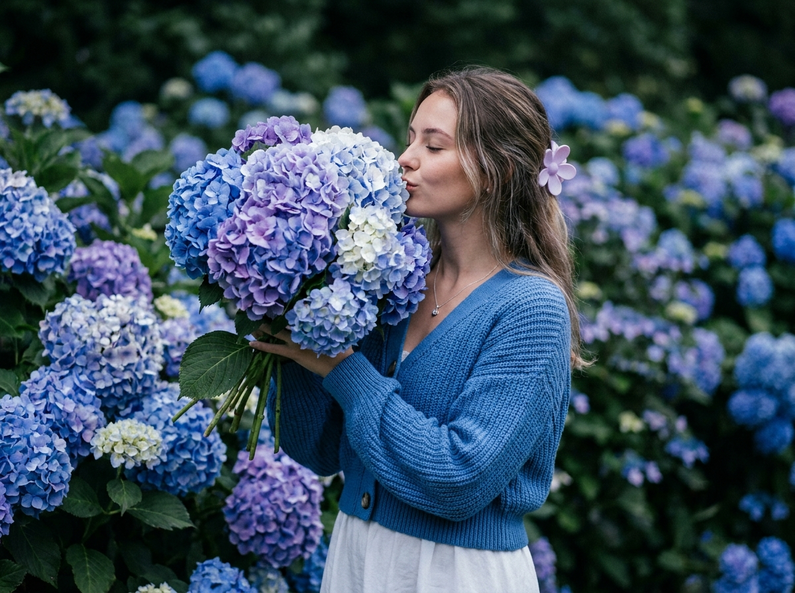
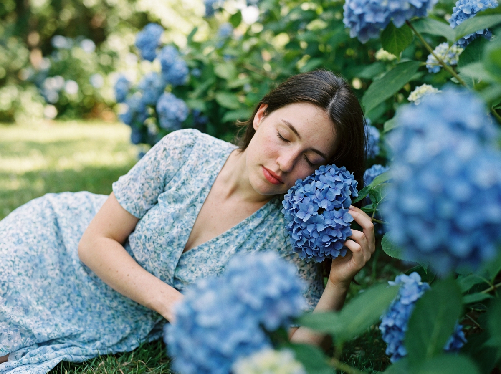
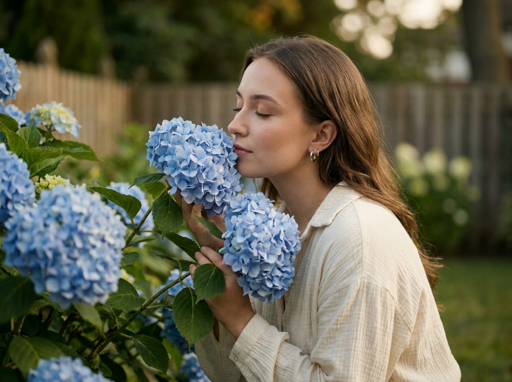
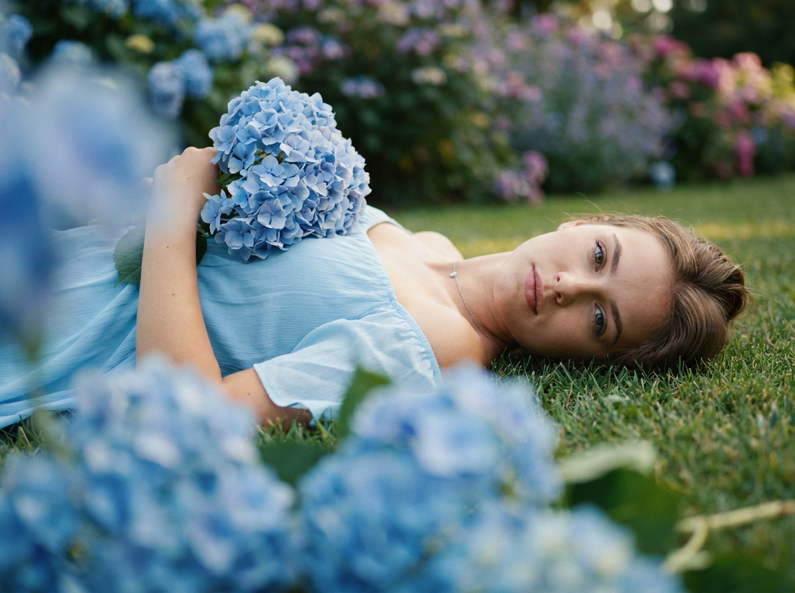
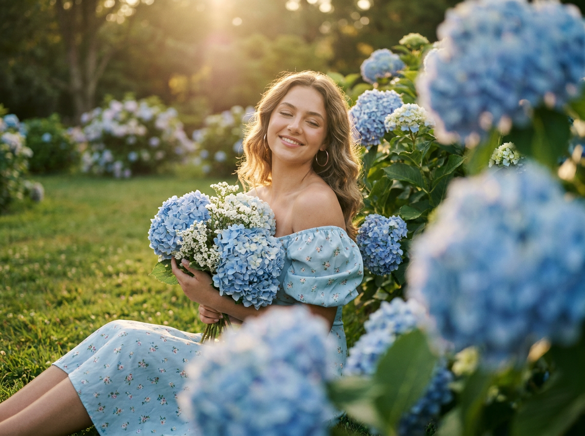
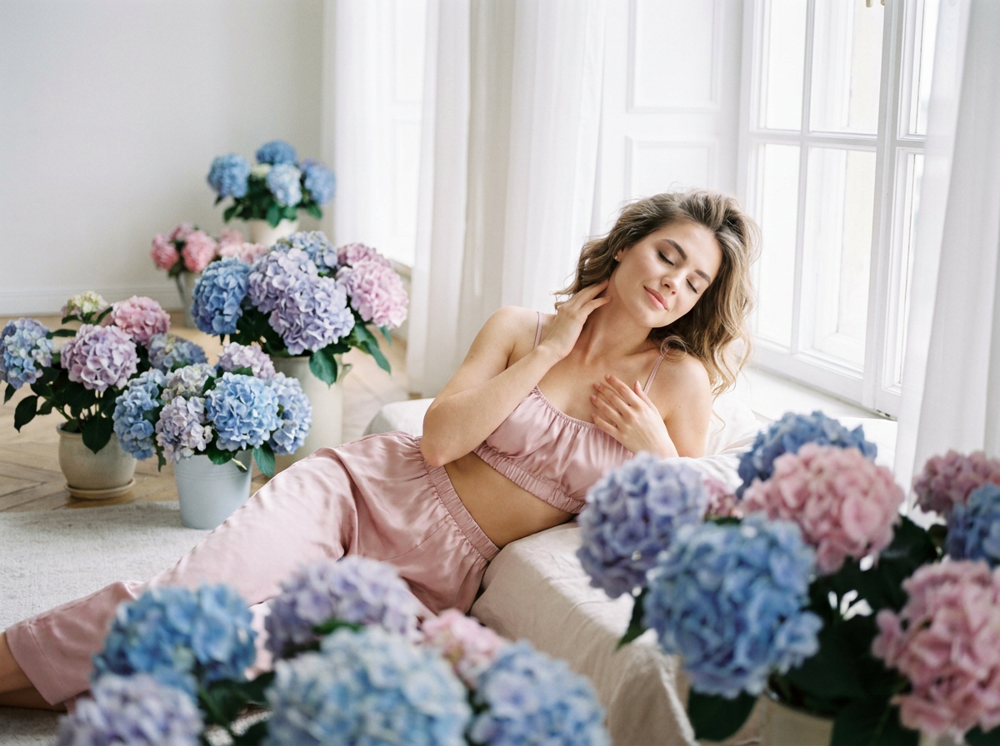
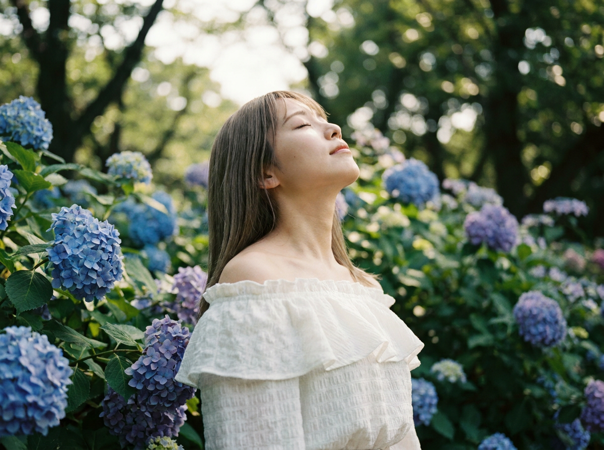
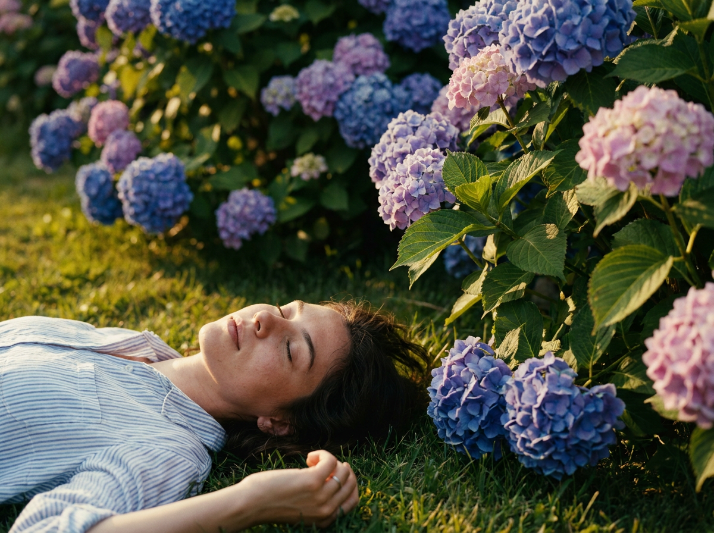

ИИ-фото с гортензиями: 10 промптов для нейросети

Обычная съёмка с цветами часто требует подходящего сада, правильного света и десятков удачных дублей. Генерация помогает собрать нужную сцену за несколько попыток: сохранить черты лица, выбрать настроение и сразу управлять букетом, одеждой и композицией.
В подборке — 10 сценариев с голубыми и фиолетовыми гортензиями: студийный портрет, прогулка в саду, кадры на траве, свадебная эстетика и нежная интерьерная съёмка. Промпты можно использовать как основу и адаптировать под свой референс.
Как сгенерировать такое фото: пошагово
Нужен снимок анфас при ровном свете, лицо в кадре целиком, без тёмных очков и головных уборов. Разрешение от 1000 пикселей по короткой стороне. Чем чётче исходник, тем точнее модель повторит черты.
Выберите сценарий ниже и нажмите «Копировать» — текст уйдёт в буфер целиком, вместе с командой сохранения внешности. Эта команда стоит первой строкой и отвечает за то, чтобы на выходе было ваше лицо, а не случайное.
Кнопка «Сгенерировать» рядом с каждым промптом открывает модель в новой вкладке. Nano Banana Pro работает с референсом лица — в отличие от моделей, которые генерируют портрет с нуля и узнаваемость теряют.
Промпт — в поле ввода, портрет — через загрузку референса. Порядок значения не имеет, но без референса команда сохранения внешности работать не будет: модели нечего сохранять.
Для сторис и ленты берите 9:16, для превью и обложек — 4:3. Первый результат редко идеален: если поза или свет ушли не туда, поправьте соответствующую часть промпта и запустите заново. Обычно хватает двух-трёх итераций.
10 промптов для генерации
1. Портрет с букетом
Строго сохранить внешность по загруженному референсу: черты лица, пропорции, мимику и текстуру кожи без изменений. Фотореалистичный студийный портрет молодой женщины по загруженному референсу: сохранить её индивидуальные черты, форму глаз, бровей, носа и губ, овал лица, пропорции и естественную мимику без изменения внешности. Она стоит в пол-оборота вправо, но поворачивает лицо к объективу и смотрит через плечо, слегка и спокойно улыбаясь. Женщина прижимает к груди большой букет голубых гортензий; букет находится слева и занимает большую часть кадра, между соцветиями видны зелёные листья. На ней синяя джинсовая куртка оверсайз из денима, рукава застёгнуты, из-под воротника деликатно выглядывает тонкая бретель или край топа на плече. В кадре — верх корпуса и одно плечо. Мягкий студийный свет, естественная текстура кожи, аккуратный натуральный макияж, высокая детализация, портретный объектив 85 мм, малая глубина резкости.
2. Сон в летнем саду

Строго сохранить внешность по загруженному референсу: черты лица, пропорции, мимику и текстуру кожи без изменений. Кинематографичная фотореалистичная outdoor-съёмка в летнем саду на тёплом закатном или вечернем солнце. Молодая девушка с внешностью по загруженному референсу лежит на зелёной траве на горизонтально расстеленном белом или светло-бежевом пледе. Поза полубоком: голова повернута влево, глаза закрыты или слегка приоткрыты, выражение безмятежное. Одна рука согнута у груди, пальцы легко касаются ключицы, вторая свободно лежит вдоль тела; ноги вытянуты и немного согнуты в коленях. На девушке лёгкий светло-голубой сарафан на тонких бретелях, струящаяся ткань до середины икры или чуть выше, мягкие складки и тонкий пояс по фигуре. На ногах светлые босоножки, допустимы небольшие неброские аксессуары. Вокруг — зелёный газон и цветущие гортензии, тёплые блики, мягкие тени, объектив 50 мм, плёночная цветокоррекция.
3. Нежность среди цветов

Строго сохранить внешность по загруженному референсу: черты лица, пропорции, мимику и текстуру кожи без изменений. Фотореалистичный кинематографичный портрет в саду с густыми кустами голубых и фиолетовых гортензий. Молодая девушка стоит по центру или немного правее и держит у груди объёмный букет с шаровидными соцветиями. Корпус слегка развёрнут, лицо в левом профиле или полупрофиле, направленном к цветам. Девушка нежно прижимается лицом к гортензии, целует или почти касается губами лепестков; глаза закрыты либо полузакрыты, настроение романтичное и тихое. Прямые волосы частично падают на плечо, сбоку закреплена светлая декоративная заколка или цветок сиренево-голубого оттенка. Макияж лёгкий, но с заметной стрелкой и акцентом на глаза, губы приглушённого тона. На ней голубой вязаный кардиган или свитер, мягкая фактура пряжи. Дневной рассеянный свет, натуральная кожа, размытие фона, объектив 85 мм, малая глубина резкости.
4. Ветка у лица

Строго сохранить внешность по загруженному референсу: черты лица, пропорции, мимику и текстуру кожи без изменений. Фотореалистичная кинематографичная съёмка в летнем саду с голубыми гортензиями, мягкий дневной свет без жёстких теней. Молодая девушка с аккуратно уложенными волосами и центральным пробором сидит на траве в расслабленной полулежачей позе. Колени согнуты, одна нога слегка вытянута в сторону, корпус повёрнут вправо, почти в пол-оборота. Глаза закрыты, лицо спокойно, голова немного склонена к цветам. Девушка держит руками ветку гортензии так, чтобы крупное шаровидное соцветие оказалось у уровня лица и частично перекрыло передний план. На ней лёгкое светло-голубое платье с мелким светлым или белым принтом, тонкая цепочка на шее. Кожа естественного тона, лёгкий макияж, алые или розово-красные губы. Садовой фон мягко размыть, добавить натуральную траву и объёмные листья, объектив 50 мм, реалистичная цветопередача.
5. Поцелуй гортензии

Строго сохранить внешность по загруженному референсу: черты лица, пропорции, мимику и текстуру кожи без изменений. Кинематографичный фотореалистичный портрет молодой девушки в цветущем саду. Она стоит среди кустов голубых гортензий и держит возле лица несколько ветвей, занимая соцветиями значительную часть кадра. Лицо снято в левом профиле; глаза закрыты или полуприкрыты, губы нежно касаются крупных голубых цветков. Выражение мягкое, задумчивое, романтичное. На девушке свободное кремовое или молочное платье либо блуза из ткани с деликатной фактурой и естественными складками, без яркого принта. В ушах небольшие тонкие серьги-кольца с лёгким металлическим блеском. Свет тёплый закатный или вечерний, экспозиция слегка приглушённая, тени мягкие. Цветокоррекция романтичная: тепло-оливковая гамма с прохладными голубыми акцентами гортензий. Съёмка на объектив 85 мм, фон растворяется в боке, детали лепестков и кожи натуральные.
6. Плёночный садовый кадр

Строго сохранить внешность по загруженному референсу: черты лица, пропорции, мимику и текстуру кожи без изменений. Фотореалистичная outdoor-съёмка с плёночной эстетикой в летнем парке или саду: зелёный газон, множество цветущих кустов и мягкий естественный свет. Молодая женщина лежит или полулежит на траве в правой части изображения, корпус немного развёрнут, лицо обращено к камере. Она смотрит уверенно и спокойно — прямо в объектив или чуть сверху, без напряжения. Волосы прямые, аккуратно убраны назад, у корней сохраняется лёгкий объём. Макияж естественный: ровный тон, выразительные глаза, губы нюдовые или розовые. На шее тонкая деликатная цепочка, допустимы маленькие серьги. Согнутая рука уходит в левую верхнюю часть кадра и удерживает массивный букет или ветку голубых гортензий, цветы образуют крупный передний план. Сохранить натуральную фактуру травы, мягкое зерно, умеренный контраст, объектив 50 мм, эффект аналоговой плёнки.
7. Праздник на траве

Строго сохранить внешность по загруженному референсу: черты лица, пропорции, мимику и текстуру кожи без изменений. Фотореалистичная кинематографичная свадебно-праздничная съёмка в саду. Молодая девушка сидит на зелёной траве в центре или немного левее, колени согнуты, руки удерживают и прижимают к себе букет. Она улыбается спокойно и счастливо, глаза слегка прикрыты от солнечного света. Волосы немного волнистые, с объёмом у корней. На девушке пастельно-голубое платье с открытыми плечами, мелким цветочным рисунком и мягкой тканью; короткие рукава-фонарики, аккуратная посадка. В ушах заметные серьги-кольца небольшого или среднего размера, других украшений нет. В руках и вокруг девушки — крупные шаровидные голубые гортензии, среди них немного светлых и белых мелких цветов. На переднем плане разместить дополнительные соцветия, чтобы создать глубину кадра. Тёплый солнечный свет, мягкое боке, объектив 50 мм, праздничная пастельная цветокоррекция.
8. Гортензии у окна

Строго сохранить внешность по загруженному референсу: черты лица, пропорции, мимику и текстуру кожи без изменений. Фотореалистичная интерьерная fashion-съёмка с романтичной атмосферой: молодая женщина лежит на светлой кровати или матрасе возле окна, расположена справа в кадре и полулежит в расслабленной позе. Глаза закрыты или полузакрыты, губы мягко сомкнуты, на лице ощущение отдыха. Одна рука поднята к шее или плечу, пальцы свободные; вторая рука естественно лежит у груди. Волосы слегка растрёпанные и волнистые, с объёмом у корней, мягкие пряди обрамляют лицо. Макияж натуральный, с акцентом на глаза; кожа имеет деликатное сияние, брови аккуратно уложены. На ней нежный пудрово-розовый сатиновый или шелковистый комплект: платье либо топ с юбкой или шортами, мягкие сборки у выреза. Рядом и на переднем плане — голубые гортензии, часть букета размыта. Свет из окна, воздушные белые ткани, объектив 50 мм, малая глубина резкости.
9. Вдохнуть аромат цветов

Строго сохранить внешность по загруженному референсу: черты лица, пропорции, мимику и текстуру кожи без изменений. Фотореалистичный кинематографичный outdoor-портрет в весеннем или летнем саду, где за девушкой растут густые кусты голубых и фиолетовых гортензий с насыщенными зелёными листьями. Молодая женщина снята крупным планом — видны голова и верх корпуса, она расположена справа или по центру. Прямые волосы свободно лежат на плечах. Девушка откинула голову назад, подняла подбородок и направила взгляд в небо; глаза закрыты или полузакрыты, выражение расслабленное, будто она вдыхает аромат цветов. Хорошо читаются профиль, линия шеи и естественные черты лица. На ней нежная белая блуза или платье с открытыми плечами, мягкими рюшами у декольте и лёгкой фактурой хлопка или шёлка; рукава собраны складками и оборками. Соцветия окружают лицо, но не закрывают его полностью. Мягкий солнечный свет, натуральная кожа, объектив 85 мм, детализированное боке.
10. На траве среди соцветий

Строго сохранить внешность по загруженному референсу: черты лица, пропорции, мимику и текстуру кожи без изменений. Фотореалистичный кинематографичный летний кадр в саду, снятый на открытом воздухе при тёплом солнечном свете. Молодая девушка лежит на спине на зелёной траве и находится в нижней левой части изображения. Голова лежит на земле, лицо повернуто к камере, глаза закрыты, выражение спокойное и расслабленное, губы естественные. Волосы немного растрёпаны и разложены по траве или уходят в сторону. На девушке светлая хлопковая блуза или рубашка в тонкую бело-голубую полоску, видны мягкие складки ткани, часть воротника и плечевого шва. В кадре заметны рука и плечо; на пальце допустимо тонкое кольцо без вычурности. Вокруг девушки — плотные кусты голубых гортензий, крупные соцветия создают цветочную рамку и частично размытый передний план. Солнечные блики, естественные тени, объектив 35 мм, реалистичная детализация травы и лепестков.
Что важно учесть в этом стиле
Гортензии хорошо работают как крупный цветовой акцент: голубые соцветия сразу задают прохладную палитру, а тёплый закатный свет добавляет коже мягкости. Если цветов слишком много, лицо теряется, поэтому в промпте лучше отдельно указать, какая часть букета уходит на передний план, а какая остаётся фоном.
Для портретов подойдут 50 или 85 мм и малая глубина резкости. Объектив 35 мм лучше оставить для сцен на траве, где нужно показать позу, плед и сад. Референс лица не гарантирует идеального совпадения с первой попытки: проверяйте глаза, пальцы, серьги и форму соцветий после каждого варианта.
Идеи для вариаций
- Замените голубые гортензии на пудрово-розовые, белые или двухцветные соцветия.
- Перенесите сцену в оранжерею, на веранду с плетёным креслом или к старой садовой калитке.
- Добавьте лёгкий дождь, капли на лепестках и отражения на влажной траве.
- Поменяйте объектив: 35 мм для сюжетного кадра, 85 мм для портрета, 105 мм для плотного крупного плана.
- Попробуйте эстетику свадебного альбома, аналоговой плёнки или журнальной fashion-съёмки.
Как собрать свой промпт
Сначала задайте тип кадра и локацию: крупный портрет в саду, сцена на траве или интерьер у окна. Затем опишите позу, направление взгляда, эмоцию и положение цветов относительно лица. После этого добавьте одежду, аксессуары и свет — именно эти детали сильнее всего меняют настроение изображения.
В конце укажите технические параметры: фотореализм, фокусное расстояние, глубину резкости, характер цветокоррекции и формат кадра. Для стабильного результата меняйте за один раз только один блок. Сделайте 4–8 генераций, выберите удачную композицию и лишь потом уточняйте руки, волосы и лепестки.
Ошибки, из-за которых кадр не получается
- Слишком расплывчатая поза. Если не указать положение рук, ног и головы, модель соберёт случайную композицию.
- Цветы закрывают лицо. Пропишите, какая часть соцветий находится перед камерой, а лицо остаётся читаемым.
- Смешаны разные источники света. Не соединяйте в одной сцене жёсткое полуденное солнце, неон и мягкий свет из окна.
- Избыток аксессуаров. Для нежного портрета достаточно цепочки или серёг, иначе внимание уйдёт от гортензий.
- Нет указаний по масштабу. Уточняйте, нужен ли крупный портрет, верх корпуса или полный рост с травой и садом.
- Ожидание идеального результата с первой попытки. Сгенерируйте несколько вариантов и отдельно исправьте кисти, пальцы, серьги и мелкий рисунок на одежде.
Частые вопросы
Как сделать такое ИИ-фото бесплатно?
Попробуйте Kandinsky и Шедеврум: они подходят для текстовой генерации, но набор настроек и качество сложных деталей могут быть ограничены. Krea AI и Arena.ai удобны для экспериментов и сравнения результатов, однако доступность функций меняется. С референсом лица ситуация зависит от конкретного режима: где-то можно загрузить изображение, а где-то доступны только текстовые подсказки или слабое влияние референса. Для точного совпадения черт понадобится несколько попыток и аккуратная проверка результата.
Как сохранить лицо с загруженного референса?
Загрузите чёткий портрет без сильных фильтров, где хорошо видны глаза, нос, губы и овал лица. В промпте укажите, что индивидуальные черты и пропорции нужно сохранить, но не перегружайте описание десятками характеристик внешности. Для устойчивого результата используйте один и тот же референс во всех вариантах и меняйте только сцену, одежду или свет.
Как сделать гортензии реалистичными?
Опишите форму соцветий как крупные шаровидные скопления мелких цветков и добавьте зелёные листья. Уточните расстояние до камеры: несколько цветов в резком переднем плане, остальные — в мягком боке. Полезно отдельно попросить натуральную текстуру лепестков, небольшие различия между соцветиями и естественные тени.
Какой формат выбрать для такого изображения?
Для портрета и публикации в ленте подойдёт вертикальный формат 4:5 или 2:3. Для сторис и обоев используйте 9:16, а для горизонтальной сцены на траве — 3:2 или 16:9. Сначала задайте композицию и положение модели, а затем увеличивайте разрешение: апскейл не исправит лицо или руки, если они не получились на исходном кадре.